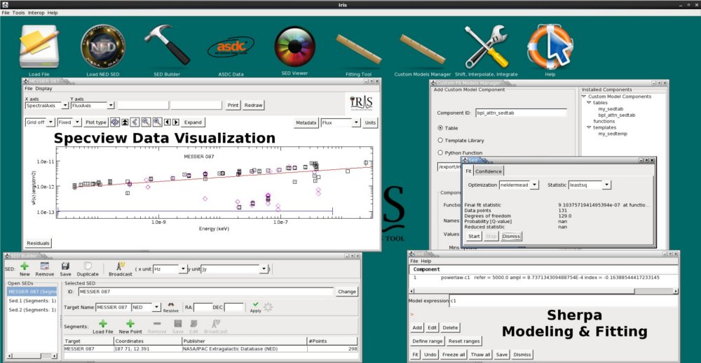

Iris is a downloadable Graphical User Interface (GUI) application which allows the astronomer to build and analyze wide-band Spectral Energy Distributions (SEDs). SED data may be loaded into Iris from a file on the user’s local disk, from a remote URL, or imported directly from the NASA Extragalactic Database (NED) for analysis.
Need help? Have any questions or comments about Iris? Contact us at the CXC HelpDesk. We welcome any feedback, and are happy to help you out. Please select “Iris” from the list of dropdown categories, and we will get back to you within 24 hours.

The components of Iris have been contributed by members of the Virtual Astronomical Observatory (VAO). Specview, contributed by STScI, provides a GUI for reading, editing, and displaying SEDs, as well as defining model expressions and setting initial model parameter values for spectral fitting. Sherpa, contributed by the Chandra project at the Smithsonian Astrophysical Observatory (SAO), provides a library of models, fit statistics, and optimization methods for analyzing SEDs; the underlying i/o library (SEDlib), also contributed by SAO, is written to the IVOA Spectrum Data Model 1.03 standard. NED is a service provided by IPAC at Caltech for easy location of the data available for a given extragalactic astronomical source, including SEDs. The ASI Science Data Center (ASDC) also provides a plugin to their database, where the user can retrieive photometric data within a search radius and time period. The SED Builder which is bundled with Iris, and contributed by SAO, is a tool for converting non-standard SED data files into a format supported by Iris, so that the file output by the tool may be loaded into Iris for analysis. Since the disbanding of the VAO in Fall 2014, Iris has been maintained and developed by the Chandra X-ray Observatory at SAO.
Communication between Specview and Sherpa is managed by a Simple Application Messaging Protocol (SAMP) connection. Specview packages SED data, model definitions and starting parameter values, and sends them to Sherpa whenever a fit to a SED is done. The goal is to seamlessly combine the power of Specview’s GUI and data manipulation functions with Sherpa’s robust modeling and fitting functions, as well as provide easy access to NED’s extensive database of extragalactic SEDs. We have named this combined software package “Iris”.
Bugs and caveats associated with this release of the Iris software are documented on the Bugs & Caveats page.
Iris is funded by and actively developed at the Chandra X-Ray Observatory (CXC) at SAO. Iris was originally developed by the VAO from 2011 to 2014 .